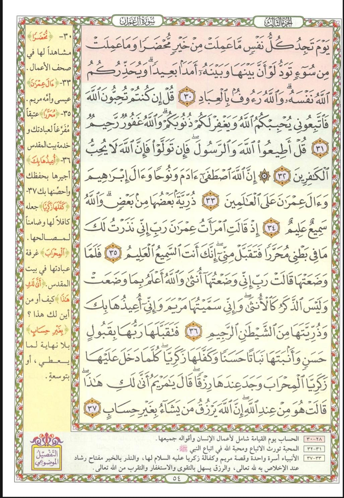
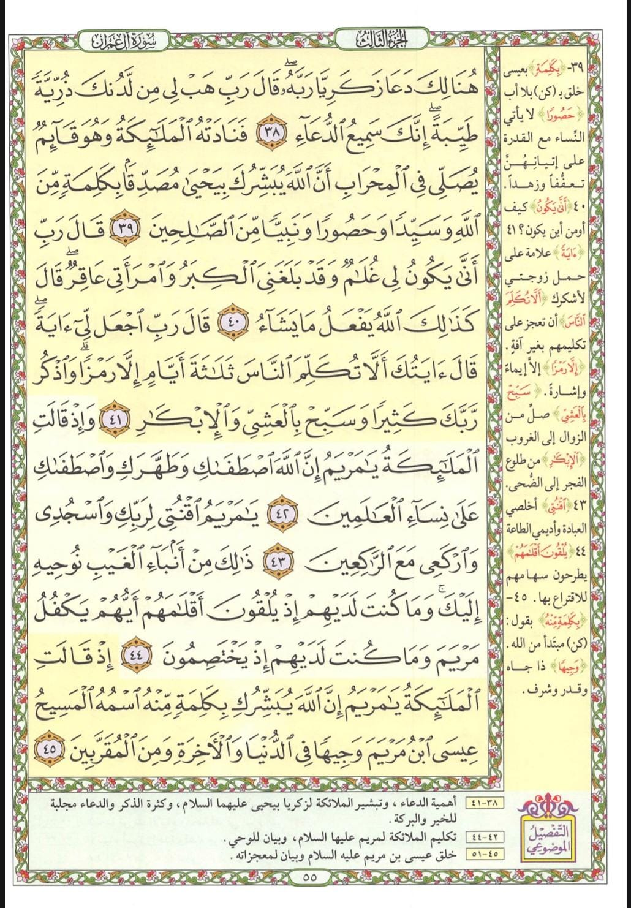

المحاضرة السابعة: طريقة القصة في الحفظ 📖🎬✨
نتناول في هذه المحاضرة واحدة من أقوى الاستراتيجيات العقلية لتثبيت المعلومات: طريقة القصة في الحفظ، وكيف يستغل الدماغ البشري عناصر (المشاهد، البطل، الحوار) لتحويل الكلمات الجافة والأرقام والآيات القرآنية إلى شريط سينمائي حي لا يُمحى من الذاكرة.
عناصر القصة وتأثيرها العصبي على الذاكرة 🧠🎬
لماذا نتذكر الأفلام والقصص لسنوات طويلة بسهولة تامة وبلا أي مجهود؟
لو سألت نفسك: لماذا نتذكر قصة فيلم شاهدناه منذ خمس سنوات بكل تفاصيله وممثليه وأحداثه، بينما ننسى قائمة من خمس كلمات قرأناها بالأمس؟
السر يكمن في أن الدماغ البشري لا يحفظ النصوص المجردة، بل هو جهاز سردي بصري بامتياز! عندما نحول المعلومة إلى قصة، فإننا نفعّل شطري الدماغ معاً: الفص الأيمن (الخيال والصور والمشاعر) والفص الأيسر (المنطق والتسلسل والألفاظ).
1. المشاهد (Scenes)
تخيّل مكان الحدث، الإضاءة، الألوان، والتفاصيل البصرية الملموسة.
2. البطل (Hero / Protagonist)
شخصية محورية تدور حولها الأحداث وتربط الوقائع ببعضها البعض.
3. الحوار (Dialogue)
كلام متبادل يعبر عن المشاعر والقرارات، مما يمنح الذاكرة رابطاً صوتياً وشعورياً.
تمرين الكلمات الـ 7 العشوائية بالترتيب 🦁🚢
تطبيق قاعدة: كل كلمة في جملة قصيرة جداً (3-4 كلمات) تربطها بالتي بعدها
لدينا قائمة من 7 كلمات متباعدة تماماً وغير مترابطة. إذا حاولنا حفظها بالتكرار العادي سننساها أو نخلط ترتيبها. لكن بربط كل كلمة بالتي تليها في جملة سريعة من 3 إلى 4 كلمات، تصبح متسلسلة تلقائياً:
تحدي الاستدعاء الذهني للكلمات الـ 7 بالترتيب
قم الآن باسترجاع الكلمات السبع بالترتيب الدقيق في ذهنك مستعيناً بالقصة، ثم انقر على كل بطاقة للتأكد من تذكرك:
تمرين حفظ الأرقام الكبيرة بالقصة 🔢💡
تحويل الأرقام المجردة الصامتة إلى سيناريو واقعي بمشاهد وبطل وحوار
غالباً ما يعجز العقل عن حفظ رقم عشوائي طويل مكوّن من 12 إلى 14 رقماً؛ لأن الأرقام لا تملك صورة بصرية بطبيعتها. ولكن بمجرد تجزئة الرقم إلى كتل ونسج قصة متسلسلة كحكاية مالية أو موقف حياتي (بطل - مشاهد - أرقام ذات دلالة)، يثبت الرقم على الفور!
(954217835012) مقسم إلى 6 أزواج رقمية لتسهيل نسج القصة السردية.
تطبيق طريقة القصة في القرآن الكريم: سورة آل عمران 📖✨
تحليل التسلسل القصصي المترابط لصفحتي (54 و 55) وكيف ينقلك المعنى من مشهد لمشهد
🌿 كيف يخدم البناء القصصي حفظ الآيات في سورة آل عمران؟
في صفحتي 54 و 55 نجد نسقاً قصصياً ربانياً متصلاً بإحكام بالغ: نبدأ ببيان أن الأنبياء أسرة واحدة مصطفاة، ثم ننتقل إلى قصة السيدة مريم عليها السلام ونذر أمها، ثم يتخلل ذلك مشهد معجز عن أهمية الدعاء وبشارة زكريا بيحيى عليه السلام حين رأى كرامة مريم، ليعود السياق بعدها مباشرة إلى بشارة الملائكة لمريم بمولد المسيح عيسى عليه السلام.
هذا الترابط السردي يحمي الحافظ من أي نسيان أو تردد؛ فكل مشهد يُسلّم الذهن منطقياً وشعورياً للمشهد التالي!
📗 أولاً: قراءة وتدبر صفحة 54 من سورة آل عمران الآيات 30 - 37

﴿إِنَّ اللَّهَ اصْطَفَىٰ آدَمَ وَنُوحًا وَآلَ إِبْرَاهِيمَ وَآلَ عِمْرَانَ عَلَى الْعَالَمِينَ﴾ (33) ➜ تتلوها مباشرة: ﴿ذُرِّيَّةً بَعْضُهَا مِن بَعْضٍ وَاللَّهُ سَمِيعٌ عَلِيمٌ﴾ (34).
الرابط السردي: البدء بالأصل المشترك؛ كلهم سلسلة طاهرة ممتدة، ذرية بعضها من بعض في الإيمان والدعوة.
- • النذر في البطن: ﴿إِذْ قَالَتِ امْرَأَتُ عِمْرَانَ رَبِّ إِنِّي نَذَرْتُ لَكَ مَا فِي بَطْنِي مُحَرَّرًا فَتَقَبَّلْ مِنِّي...﴾ (35).
- • الولادة والتسمية والإعاذة: ﴿فَلَمَّا وَضَعَتْهَا قَالَتْ رَبِّ إِنِّي وَضَعْتُهَا أُنثَىٰ وَاللَّهُ أَعْلَمُ بِمَا وَضَعَتْ... وَإِنِّي سَمَّيْتُهَا مَرْيَمَ وَإِنِّي أُعِيذُهَا بِكَ وَذُرِّيَّتَهَا مِنَ الشَّيْطَانِ الرَّجِيمِ﴾ (36).
- • القبول الحسن ورزق المحراب: ﴿فَتَقَبَّلَهَا رَبُّهَا بِقَبُولٍ حَسَنٍ وَأَنبَتَهَا نَبَاتًا حَسَنًا وَكَفَّلَهَا زَكَرِيَّا ۖ كُلَّمَا دَخَلَ عَلَيْهَا زَكَرِيَّا الْمِحْرَابَ وَجَدَ عِندَهَا رِزْقًا...﴾ (37).
نهاية صفحة 54: سؤال زكريا العجيب: ﴿قَالَ يَا مَرْيَمُ أَنَّىٰ لَكِ هَٰذَا ۖ قَالَتْ هُوَ مِنْ عِندِ اللَّهِ ۖ إِنَّ اللَّهَ يَرْزُقُ مَن يَشَاءُ بِغَيْرِ حِسَابٍ﴾ — هذا المشهد هو الذي فجّر في قلب زكريا الرغبة في الدعاء بالصفحة التالية!
📘 ثانياً: قراءة وتدبر صفحة 55 من سورة آل عمران الآيات 38 - 45

- • لحظة الدعاء: ﴿هُنَالِكَ دَعَا زَكَرِيَّا رَبَّهُ ۖ قَالَ رَبِّ هَبْ لِي مِن لَّدُنكَ ذُرِّيَّةً طَيِّبَةً ۖ إِنَّكَ سَمِيعُ الدُّعَاءِ﴾ (38).
- • بشارة الملائكة في المحراب: ﴿فَنَادَتْهُ الْمَلَائِكَةُ وَهُوَ قَائِمٌ يُصَلِّي فِي الْمِحْرَابِ أَنَّ اللَّهَ يُبَشِّرُكَ بِيَحْيَىٰ...﴾ (39).
- • استعجاب واستعلام زكريا: ﴿قَالَ رَبِّ أَنَّىٰ يَكُونُ لِي غُلَامٌ وَقَدْ بَلَغَنِيَ الْكِبَرُ وَامْرَأَتِي عَاقِرٌ...﴾ (40).
- • طلب الآية والمعجزة: ﴿قَالَ رَبِّ اجْعَل لِّي آيَةً ۖ قَالَ آيَتُكَ أَلَّا تُكَلِّمَ النَّاسَ ثَلَاثَةَ أَيَّامٍ إِلَّا رَمْزًا...﴾ (41).
- • اصطفاء مريم وطهارتها: ﴿وَإِذْ قَالَتِ الْمَلَائِكَةُ يَا مَرْيَمُ إِنَّ اللَّهَ اصْطَفَاكِ وَطَهَّرَكِ وَاصْطَفَاكِ عَلَىٰ نِسَاءِ الْعَالَمِينَ﴾ (42).
- • أمر العبادة والقنوت: ﴿يَا مَرْيَمُ اقْنُتِي لِرَبِّكِ وَاسْجُدِي وَارْكَعِي مَعَ الرَّاكِعِينَ﴾ (43).
- • أنباء الغيب والاقتراع: ﴿ذَٰلِكَ مِنْ أَنبَاءِ الْغَيْبِ نُوحِيهِ إِلَيْكَ ۚ وَمَا كُنتَ لَدَيْهِمْ إِذْ يُلْقُونَ أَقْلَامَهُمْ أَيُّهُمْ يَكْفُلُ مَرْيَمَ...﴾ (44).
- • بشارة الملائكة بالمسيح عيسى: ﴿إِذْ قَالَتِ الْمَلَائِكَةُ يَا مَرْيَمُ إِنَّ اللَّهَ يُبَشِّرُكِ بِكَلِمَةٍ مِّنْهُ اسْمُهُ الْمَسِيحُ عِيسَى ابْنُ مَرْيَمَ...﴾ (45).
اختبار الاستيعاب السريع (5 أسئلة تفاعلية) 🎯🧠
تحقق فوراً من فهمك لأسرار طريقة القصة وتطبيقاتها العملية
1️⃣ ما هي العناصر الثلاثة الأساسية التي تتكون منها أي قصة وتجعلها سهلة التذكر في الدماغ؟
2️⃣ عند حفظ قائمة كلمات عشوائية مثل (أسد، سفينة، عدس، شطة...)، ما هو الشرط الذهني لصياغة القصة؟
3️⃣ كيف نطبق تقنية القصة لحفظ رقم كبير مكون من 12 إلى 14 رقماً؟
4️⃣ ما هو الرابط السردي بين ختام صفحة 54 وبداية صفحة 55 من سورة آل عمران؟
5️⃣ في صفحة 55، كم عدد الآيات المتتالية التي تناولت قصة دعاء زكريا وتبشيره بيحيى عليه السلام؟
أحسنت صنعاً! أتممت التحدي بنجاح 100%
أنت الآن تدرك بعمق قوة تحويل المعلومات إلى سيناريو قصصي متصل في تثبيت الحفظ للأبد!
الواجب العملي التراكمي الشامل 📝🔥
الاستمرار اليومي هو السر الحقيقي لبناء المسارات العصبية الخارقة في دماغك
تطبيق خطوات التليين أولاً، ثم استخراج المشاهد والأبطال والحوارات، وتحويل تسلسل الآيات إلى شريط سينمائي متتابع في عقلك.
شغّل المؤقت من لحظة بدء الحفظ البصري وسجّل بدقة الزمن المستغرق حتى اكتمال التسميع التام بدون أخطاء، ولاحظ كيف اختصرت القصة زمن الحفظ بنسبة مذهلة!
مراجعة بعد نصف ساعة، ومراجعة قبل النوم، ومراجعة بعد 24 ساعة، ثم بعد أسبوع، شهر، وثلاثة أشهر.
أنت الآن تملك مفتاح الخيال السردي لحفظ لا يُمحى أبداً!
القصة هي لغة الدماغ الفطرية، وحين توظفها في كلام الله تصبح الآيات حية في وجدانك وعقلك.